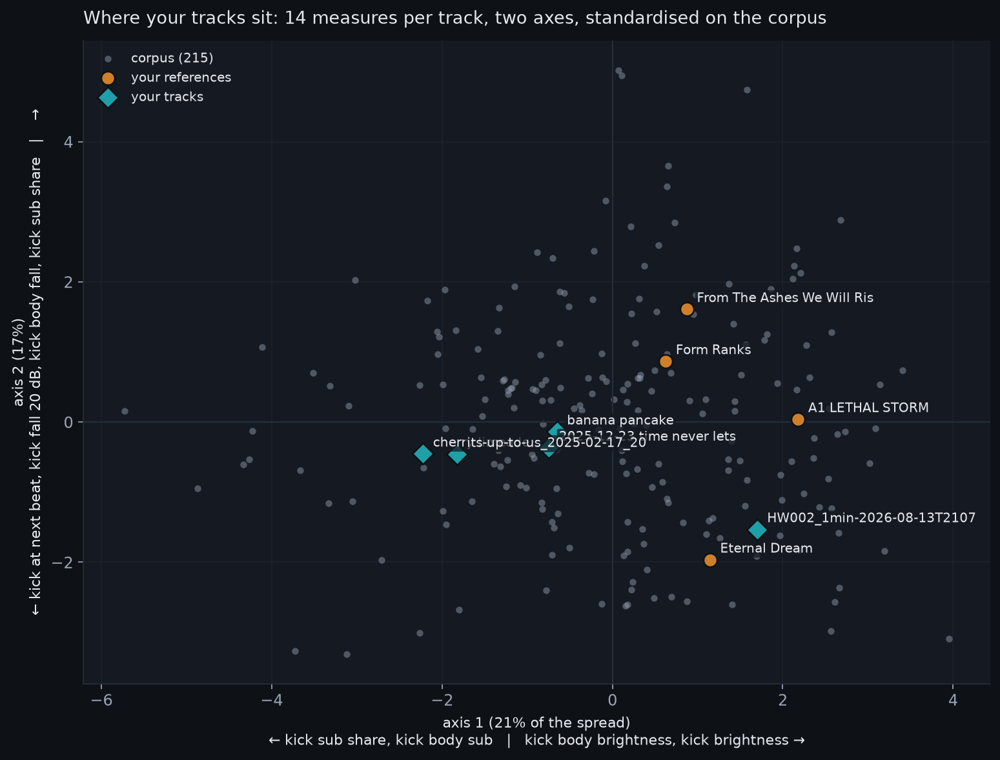

Anthony, you put five of your tracks, four references and a sample pack in a folder, and I ran them through the same pipeline that measured the 218-track corpus in part two and took it apart in part three. This note is what came out, in the order it happened, because the order matters: the method was wrong twice before it was useful, and both times it was your material that showed it.
What broke first
The first file through was the one-minute demo, HW002. The separator put almost nothing in its bass stem, eighteen decibels under the drums, so every number that depended on the bass stem read a gap instead of a pump. And the role model, which names a sound's job from seven measures, called your kick "space" three times out of four. It had learned from clean kicks and had never met a long, distorted, mid-forward one. The pump on the mix, fifteen decibels, was the one usable number.
Both faults are now handled rather than hidden. Rows the separator cannot support are struck through on the sheet and say why. And kicks are no longer found by asking the model what it hears; they are found by where they sit. In this music the kick is on the beat by definition, so a beat with a strong onset in the drum stem is a kick, whatever the model calls it. The model's opinion is still shown, as a row about the model.
The second fault was subtler. My first kick finder looked for a rise in the sub band, and on your tracks it found a third of the kicks. Your kick has a sustained rumble under it, so the sub band does not rise when the kick lands; it is already there. The finder that uses the beat grid and the full-band onset found 499 kicks on banana pancake where the first found 173.
The map

Every track is one point: tempo, the pump on the mix, the share of kick-free bars, how fast the kick falls, how loud the kick still is when the next one lands, the kick's sub and mid share and brightness, the same three for the kick's first 250 milliseconds with the bass stem added back in, the landing pitch, and how loud the bass and "other" stems are against the drums. The first axis carries a fifth of the spread and runs from sub-heavy, dark kicks on the left to bright, mid-forward kicks on the right. The second runs from kicks that fill the beat at the bottom to kicks that get out of the way at the top.
Your four older tracks sit together, left of centre. All four references sit right of centre. The gap between the groups is about three corpus standard deviations along the first axis, and almost none of it is tempo, arrangement or how often the kick rests. It is the kick.
HW002 is the exception, and the most interesting point on the map. It sits on the references' side, next to Eternal Dream, and its nearest corpus neighbours are two compilations from NUKE THE PLANET, the hardest crew in the corpus. The one-minute demo did something the full-length tracks did not.
What the cluster is made of
Read as z-scores against the corpus, your four older tracks share four traits. The kick carries its own sub, about one standard deviation more than typical, where the references' kicks read near zero sub because their rumble is a separate layer. The kick is dark, one to one and a half standard deviations below the corpus for cherry limeade and its-up-to-us, where the references are brighter than the corpus. The kick body falls fast: banana pancake and cherry limeade drop twenty decibels in about forty-three milliseconds, and every reference is still above minus twenty at 250. And there is less "other" in your mixes than the corpus carries, less mid-band material outside the drums and bass.
The references share the opposite profile and one more thing. In each of them the separator hears the bass as its own layer, louder than the drums, and the kick body underneath is compressed to a crest factor near seven decibels. In your tracks the drums are the loudest stem and the bass sits four to eighteen decibels under them. Your kick and rumble read as one sound; theirs read as two.
Put in one sentence: your kick is a short, dark, sub-carrying note, and the reference kick is a long, bright, saturated body over a separate rumble. The pump, the tail at the next beat, the brightness, the shape of the whole map follow from that one decision.
Three things I could not measure
None of the four references has a readable pitch at 100 milliseconds into the kick; the tracker gets nothing from their loudest hits. Three of your tracks read cleanly, at 45, 62 and 65 hertz. Theirs are noise, yours are notes. That is a real difference in the sound, and also a limit of the measure: it reports where a pitch is and cannot say what it should be.
The pump on the bass stem, which part three showed to be deeper than the mix suggested, is unusable on three of your five tracks because the separator left too little in the bass stem. The pump on the mix still works, and there your two older tracks duck at seven and eight decibels where the references sit at fourteen to twenty-one. Your stems, when they arrive, settle this without a separator.
The sample pack gave the model its hardest test so far: 3,465 one-shots labelled by their folder names, on which the meter was right forty times in a hundred and named claps right four times in a hundred. A model trained on all four sources, the corrected synthetic set, the earlier packs, the corpus hits and this pack, reaches fifty-three on it, and the meter now runs that one. It is still not a model I would let name a clap.
What the pack is for
Of the 1,032 kicks in the two Vengeance packs, the ones nearest the references' kick body are the Clubby, Distortion and Hard kicks, within about one standard deviation on five measures. They are not the reference kick, but they are the raw material the reference kick is made from: long, saturated bodies rather than short thumps. The full ranking is on the sheet.
What I would do next
HW002 proves you can make the other kick. Make the next demo's kick from that side of the map on purpose: a longer body, saturated until the crest sits under eight decibels, the rumble as its own layer rather than the kick's tail. Then run the folder again. If the diamond moves right, the measure is tracking what you did, and we have the beginning of the loop the last two notes described. If it does not move, that is a finding about the measure, and a cheaper one than any I could have made without your files.